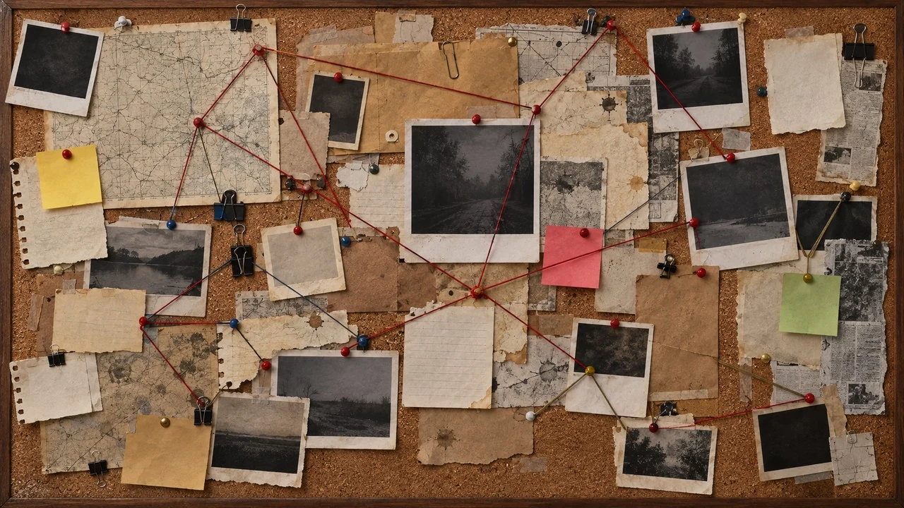

MR- Pizarra
Una pizarra de investigación colaborativa para cualquier sistema de Foundry VTT: corcho, hilos de colores, fotos, notas, recortes de periódico de formas irregulares y los documentos de tus propios diarios, colgados con sus permisos.
Instalación
En Foundry: Configuración → Módulos → Instalar módulo y pega este manifiesto:
https://github.com/ManuRomera/mr-pizarra/releases/latest/download/module.json
Requiere Foundry VTT 13 o posterior. Después, en la pestaña Diarios, pulsa Nueva pizarra.

Lo que ven los jugadores
| Permiso sobre el documento | Qué aparece en la pizarra |
|---|---|
| Observador o más | El contenido: el texto como recorte de periódico, las imágenes como foto. |
| Limitado | Solo el título; el texto sale censurado con barras y un sello «RESERVADO». |
| Ninguno | Un sobre con «?», sin nombre. |
Si subes el permiso del diario, la pieza se revela sola.
Qué incluye
- Notas, recortes con 18 papeles y 14 contornos irregulares (cada recorte sale distinto), fotos con 6 marcos, sellos, marcas de rotulador, huellas y manchas.
- Hilos de 6 colores y 3 estilos, con etiqueta.
- 20 fondos: corcho, victoriano, casa maldita, Oeste, sala de guerra, ciberpunk, nave espacial…
- Piezas ocultas hasta que las reveles, piezas privadas y bloqueo en solo lectura.
- Trabajo en común sin pisarse, con las piezas moviéndose en directo.
Límites
Las piezas ocultas o privadas se filtran en el cliente: no cuelgues secretos reales que un jugador pueda leer con la consola. Quien no sea Propietario del diario guarda sus cambios a través de la Guardiana, que debe estar conectada.
Código y documentación en GitHub · Licencia MIT